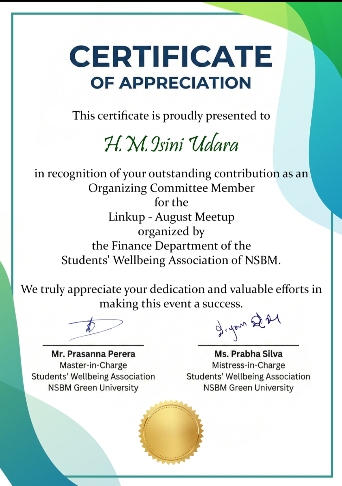

Bridging Information Systems and Finance to build data-driven intelligence that powers real business decisions. Passionate about Business Analytics, Business Intelligence, and Project Management, turning complexity into actionable insights.
I'm Isini Udara, a Management Information Systems undergraduate at NSBM Green University with a parallel background in Chartered Accountancy. Combining technology and finance, I enjoy transforming data into actionable business insights through analytics, dashboards, and data storytelling.
My primary interests lie in Business Analytics and Business Intelligence, where I explore how data can support better decision-making. I am also developing my knowledge of Project Management to better understand how technology, people, and business goals come together to deliver successful outcomes.
Currently, I am building my skills in Power BI, Tableau, SQL, python and etc, with the goal of pursuing a career at the intersection of data, technology, and business.
Business Analyst / BI Developer
Translating business needs into data solutions
Data Analyst
Extracting insight from complex datasets
Project Management (IT / Finance)
Leading tech & analytics projects end-to-end
Analytics, finance & management
Programming, data & systems
Enterprise-grade full-stack task management platform with JWT auth, task filtering, email notifications, and PDF/CSV export. I built the Admin Dashboard & Analytics Charts — giving managers real-time system insights.
A centralised student platform for NSBM built in Java using the MVC pattern. Streamlines access to academic resources, schedules, and student management tools.
Web-based salon management system with appointment booking, customer records, and service tracking — built with PHP and MySQL for a real small business.
NSBM Green University
A comprehensive programme covering enterprise systems, database management, software development, systems analysis, UX/interface design, and business intelligence — bridging IT and business strategy.
CA Sri Lanka · ICASL
Pursuing the CA professional qualification at Corporate Level, covering financial accounting, management accounting, taxation, and auditing. This finance foundation uniquely complements my IT background — giving me a cross-functional advantage in data analytics and BI roles.
Yasodara Devi Balika Vidyalaya Gampaha
Commerce stream with strong results in Accounting, Business Statistics, and Economics — the foundation that sparked my passion for the intersection of business, technology, and data.
Kolonnawa Balika Vidyalaya
Completed O/L with outstanding results — building a strong academic foundation across subjects in Sinhala,Mathematics,Science,English,History,Buddhism,Commerce,Dancing and Home Economics.

P.W.F Associates Gampaha
Performed bookkeeping, monthly payroll processing, and bank reconciliations using “QuickBook” accounting software.
Assisted in the preparation of financial statements and reports for internal and external use.
Handled accounts payable functions, including invoice verification and payment processing.
Prepared payment vouchers and assisted in cheque disbursement.
Assisted audit procedures for clients across retail, manufacturing
sectors.
Association of Information Systems · NSBM Green University
Serving as an Executive Member of the Association of Information Systems (AIS) for the 2026/27 term, contributing to student engagement initiatives, professional development activities, and the organization of events and workshops.
LINKUP 2025 August Meetup · Student Wellbeing Association · NSBM
Contributed to the planning and successful execution of the LinkUp August Meetup as an Organizing Committee Member, enhancing my teamwork, communication, and organizational skills.
Open to internship opportunities, project collaborations, and conversations around data, analytics, and tech. Got an idea or an opportunity? Let's talk!